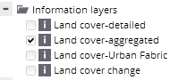
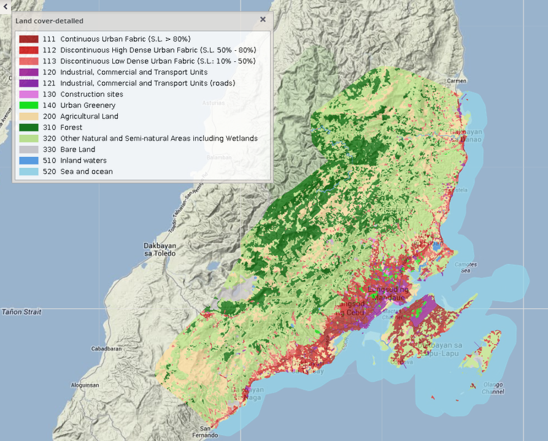

Information layers represent spatial distribution of different kinds of features or land cover classes on the Earth surface.
A specific set of information layers with specific symbologies is predefined for each theme.

You can select the layer to be displayed in the map by checking its check box. More than one of the listed layers can be displayed in the map at the same time – this multiple display is enabled via holding down the CTRL button while checking the layers' check boxes.
Both vector and raster layers can be displayed as information layers in the application. Vector information layer could be all multipolygon, polyline or point layer.
For each information layer, a legend could be displayed via the "open legend" icon in the card of selected layers.
